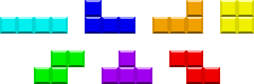

Installing | Skinning | Controls | Scoring | Gimmicks | Options | Discussion | Legal
LOCKJAW is a free software implementation of the the Soviet Mind Game, a highly popular computer puzzle game that involves guiding tetrominoes into neat stacks in a well. This game was designed in the mid-1980s by Russian game designer Alexey Pajitnov and was first implemented in a software product called TETRIS®.* Other products implementing the Soviet Mind Game include Quadra, Abandoned Bricks, KSirtet, F.B.G., N-Blox, and Heboris. While originally developed to parody the behavior of a few notorious implementations of the Soviet Mind Game, LOCKJAW is now a platform for research into the properties of the game, into the effects of rule variations, and into the capabilities of the human mind to react.
Tetrominoes are geometric shapes made of four connected square blocks. There are seven distinct tetrominoes, shaped roughly like letters of the Latin alphabet:

Tetrominoes. Top row: I, J, L, O. Bottom row: S, T, Z.
Some products spell the term as "tetramino", "tetrimino", or "tetrad".

LOCKJAW gameplay screen. Hover over objects to see their names.
The well is 10 blocks wide by 20 rows high. (There are four out-of-bounds rows above the top of the visible portion for a total of 24 rows.) The player can rotate and shift the tetrominoes as they fall in order to pack them tightly into the well. If a tetromino lands on the floor or other blocks and remains motionless for half a second, it locks into place, and the next tetromino begins to fall. The next few tetrominoes to fall are displayed in a queue to the right of the playfield. At any time, the player can swap the falling tetromino with the one in the hold box above the playfield, but a tetromino that has been swapped out cannot be immediately swapped back in. The gray blocks below the falling tetromino are the shadow, which shows where the tetromino will land.
A "line", or a complete row of 10 blocks across the well, will disappear, and everything above it moves down by one row. But if the well fills so high that a tetromino is placed entirely out of bounds or in a position such that the next tetromino does not have room to enter, the player "tops out" and the game is over.
Installing
The executable included with the official distribution is designed for Microsoft Windows systems. Unzip it into a folder on your hard disk or USB memory card.
The files lj.exe, lj.dat, ljblocks.bmp, and alleg42.dll are required to play. (If you get an error about alleg42.dll, see the instructions on the LOCKJAW download page.) To start the game, run lj.exe in Windows Explorer.
The program should work on any PC running Microsoft Windows 98 or newer operating system with an 800x600 pixel display at 16-bit or greater color depth and DirectX 7 software installed. Its source code is portable to any platform that supports the Allegro library, but it has been tested only on Microsoft Windows because the author has access only to machines that run Microsoft Windows. If you manage to get it working on any other operating system, get in touch with the author.
To recompile the program, such as if you are testing a patch or porting it to another system:
- Install a GCC toolchain, such as MinGW and MSYS from MinGW.org
- Install Allegro 4.2.0 from SourceForge.net
- Install JPGalleg 2.5 from Enhanced Creations++
- Install DUMB 0.9.3 from SourceForge.net
(Editor's note: DUMB has a dumb license, but section 6 allows relicensing under GNU GPL. Update: It appears Debian got the author to relicense it zlib style.) - Open a command prompt and cd to the folder containing the file
makefile - Type
make
Skinning
You can customize the appearance of LOCKJAW for PC by using Notepad or any other text editor to create a skin description that lists the images that shall be used. Images can be in Windows bitmap (.bmp), PC-Paintbrush (.pcx), Truevision TGA (.tga), or JFIF/JPEG (.jpg) format. All color depths should be supported. By default, this skin description should be placed in a file called skin.ini, in the same folder as lj.ini. (You can create and edit .ini files in Notepad or any other plain text editor.) LOCKJAW recognizes the following commands in a skin description:
ljblocksSRS=image- A 192x96 or 192x144 pixel image with 24x24 pixel block images, used in bounding-box rotation systems (SRS and TOD M4). Rows 1 and 2 are for blocks in the well, and rows 3 and 4 are for the falling piece. If rows 5 and 6 are present, the shadow will use those; otherwise, it will use rows 3 and 4.
ljblocksSega=image- Same as
ljblocksSRS, but used in other rotation systems. ljconnSRS=image- A 192x192 pixel image with O tetrominoes of each color, which the loader cuts up to form tetrominoes with the blocks drawn connected, used for blocks in the well and the falling piece (not the shadow or empty areas of the well) in bounding-box rotation systems. If this file is not present,
ljblocksSRSwill be used instead. ljconnSega=image- Same as
ljconnSRS, but used in other rotation systems. If this file is not present,ljblocksSegawill be used instead. color=#RRGGBB- A 3- or 6-digit hexadecimal color (e.g.
#ABCor#D0FFE3) for text in the menus and during the game. If not present, the game will use black. bgcolor=#RRGGBB- A color for the menus' background. If not present, the game will use white.
hilitecolor=#RRGGBB- A color for the background of highlighted text. If not present, the game will use pale yellow (#FFC).
pfcolor=#RRGGBB- A color for text in front of the playfield. If not present, the game will use white.
pfbgcolor=#RRGGBB- An "average" color for the playfield, to be displayed behind the pause screen and during the game over animation. If not present, the game will use black.
ljbg=#RRGGBB- An 800x600 pixel image to be displayed behind the game. If this file is not 800x600 pixels, the image will be resized (sloppily) after being loaded. If this file is not present, the game will use a plain backdrop of the same color as
bgcolor. bgm=music file- A music file in Vorbis format (
.ogg) or tracker format (.mod,.s3m,.xm, or.it) to be played during the game. You can create Vorbis format files by extracting audio from your CDs to.wavformat using CDex software and converting them with OggDropXPd software. You can download tracker format files from The Mod Archive or create them yourself using the OpenMPT music editor, the continuation of MODPlug Tracker. If this file is not present, the game will not play music.
You can create more than one skin description file and then switch among them by using the following command in lj.ini:
Skin=skin description file- A skin description file. If the skin is not present, the game uses the default file names (
ljblocks.bmp,ljblocks-sega.bmp,ljconn.bmp,ljconn-sega.bmp,ljbg.jpg, andbgm.s3m).
Example image and sound files are located in lj-contrib.zip, available from the Skins section of the download page. You can also customize the sound effects by using Allegro Grabber software to edit lj.dat.
Controls
PC
The default controls in LOCKJAW for PC are as follows:
- ← Shift left
- Left arrow key
- → Shift right
- Right arrow key
- ↓ Soft drop
- Down arrow key
- ↓ Hard drop
- Up arrow key
- ↰ Rotate left
- Z, C
- ↱ Rotate right
- X
- ↶ Rotate twice
- W
- ↖ Hold piece
- S
- ⇤ Shift far left
- Q
- ⇥ Shift far right
- E
- ↓ Firm drop
- Enter
- ↖ Alt. hold piece
- D
Controls are configurable to the keyboard or any compatible joystick. (The key labeled "Item" is not yet used in the game.) From the main menu, choose "Game Keys..." and then press the keys in order as prompted. If you don't want to bind a key or button to a given function, press a key that you won't use. The key bindings are saved to the file lj-keys.005; if they become unusable, you can delete this file to reset them to the defaults.
Some controls during game play are hard-coded to keyboard keys:
- Esc pauses and resumes the game. Holding Esc for one second stops the game and goes to a result screen.
- [ (left bracket) starts and stops demo recording, and ] (right bracket) starts and stops demo playback. An icon for stop, record, or play appears in the upper left corner of the window. The demo is saved to a file called
demo.ljm. Caution: Demos recorded on one version of LOCKJAW may not play correctly on another version. Recording another demo will overwrite the last demo, so make sure to rename the demo when you record a good one.
In the menus, Esc acts as Rotate Left, and Enter acts as Rotate Right. In all screens, Print Screen (F13) saves a copy of the display to the file ljsnap.bmp.
GBA and DS
Controls in the Game Boy Advance and Nintendo DS versions are hardcoded as follows:
- ← Shift left
- Left on Control Pad
- → Shift right
- Right on Control Pad
- ↓ Soft drop
- Down on Control Pad
- ↓ Hard drop
- Up on Control Pad
- ↰ Rotate left
- B Button
- ↱ Rotate right
- A Button
- ↖ Hold piece
- L Button
In the options menu, the B and A Buttons change screens, and the Start Button starts the game. Pressing A on the last screen of options also starts the game. Start pauses and resumes the game.
Movement features
Unlike some other S.M.G. implementations, LOCKJAW features Initial Actions. Holding a rotate button while a tetromino enters the playfield will cause the action to be performed the moment the tetromino enters. This is important for fast play. In addition, the hold key works at any time; if a piece is not falling yet, it will swap the hold piece with the next piece.
LOCKJAW also implements the so-called Super Rotation System (SRS), which allows a tetromino to rotate around obstacles for more mobility across the pile. Some players abuse SRS by rotating a piece in place repeatedly, but this will result in poorer scores in timed gimmicks. To replace this behavior with the "Sega style" behavior used in Arika's Tetris The Grand Master 3: Terror-Instinct, change the Options described below.
Scoring
LOCKJAW allows the player to choose among several scoring methods. The terms "single", "double", "triple", and "home run" refer to clearing 1, 2, 3, or 4 lines with one tetromino. (A "home run" is called a "tetris" in some other games.) "T-spin" means rotating a T piece as it lands to fit into a tight space.
In LJ and TDS, making a bonus line clear when your last line clear was also bonus ("back-to-back homer" or "back-to-back T-spin") will produce extra points. Making a T-spin that does not clear a line has no effect on bonus state.
LJ
As you clear lines, you also produce garbage that depends on the number of lines that you clear with a single tetromino. In single player mode, you earn 100 points per line cleared and 200 points per line of garbage, and in multiplayer mode (which is not yet implemented), the garbage will push up the blocks in another player's well.
| Lines | Garbage | Score | Bonus | |
|---|---|---|---|---|
| 1 line | 1 | 0 | 100 | No |
| 2 lines | 2 | 1 | 400 | No |
| 3 lines | 3 | 2 | 700 | No |
| 4 lines | 4 | 4 | 1200 | Yes |
| 1 line T-spin | 1 | 2 | 500 | Yes |
| 2 lines T-spin | 2 | 4 | 1000 | Yes |
| 3 lines T-spin | 3 | 6 | 1500 | Yes |
| Back-to-back bonus | 1 | 200 | Yes |
TNT64
Based on the Fibonacci sequence.
| Lines | Score |
|---|---|
| 1 | 100 |
| 2 | 200 |
| 3 | 300 |
| 4 | 500 |
| 5 | 800 |
| 6 | 1300 |
| 7 | 2100 |
Hotline
Only lines cleared on specific rows are worth points. There is no back-to-back bonus nor T-spin bonus.
| Row | Score |
|---|---|
| 5 | 100 |
| 10 | 200 |
| 14 | 300 |
| 17 | 400 |
| 19 | 500 |
| 20 | 600 |
TDS
Each line clear score is multiplied by a section number, computed by dividing the total number of lines cleared before this line by 10 and adding 1. Thus, lines cleared later in the game when gravity is faster are worth more than lines cleared earlier. In TDS, the section number stops increasing after 190 lines.
| Lines | Score | Bonus | |
|---|---|---|---|
| 1 line | 1 | 100 * section | No |
| 2 lines | 2 | 300 * section | No |
| 3 lines | 3 | 500 * section | No |
| 4 lines | 4 | 800 * section | Yes |
| 0 lines T-spin (wall kick) | 0 | 100 * section | |
| 0 lines T-spin (no wall kick) | 0 | 400 * section | |
| 1 line T-spin (wall kick) | 1 | 200 * section | Yes |
| 1 line T-spin (no wall kick) | 1 | 800 * section | Yes |
| 2 lines T-spin | 2 | 1200 * section | Yes |
| 3 lines T-spin | 3 | 1600 * section | Yes |
| Back-to-back bonus | 50% more | Yes |
NES
Each line clear is multiplied by the section number, as in TDS. The section number does not stop increasing. There is no back-to-back bonus nor T-spin bonus.
| Lines | Score |
|---|---|
| 1 | 40 * section |
| 2 | 100 * section |
| 3 | 300 * section |
| 4 | 1200 * section |
Drop scoring
Some games award extra points every time the tetromino lands if the player used soft drop or hard drop. LOCKJAW can simulate these.
- None
- Award no points.
- Continuous
- Award 1 point per row for hard drops. Award 1 point per row between when a soft drop starts when the piece lands. A soft drop that is started, then stopped, then started again, will award points only for the last soft drop.
- Drop
- Award 1 point per row for hard drops and for soft drops, whether or not they are interrupted.
- Soft x1 Hard x2
- Award 1 point per row for soft drops and 2 points per row for hard drops.
Gimmicks
Gimmicks are the game modes in LOCKJAW.
- Marathon
- The game gets faster and faster as each tetromino enters the well. Play until you top out. Some people play for lines; others play for points.
- 40 lines
- Play until you clear 40 lines, or until you top out, whatever comes first. The author's record is 1:00.70.
- 180 seconds
- Play for three minutes, or until you top out, whatever comes first.
- Vs. w/Items
- This mode is a joke. After the first 7 pieces you get random starting orientations, no rotation, and hidden next pieces, and the speed goes to 1G. Every time you're about to get an I tetromino, either you get 2 lines of garbage or the columns of blocks in the well are shuffled. It is debatable whether this mode is even playable. This mode exists primarily as a criticism of a similar mode in the game Tetris DS.
- Baboo!
- Standard S.M.G. with zero gravity, ending after 300 keypresses. Some players recommend practicing Baboo!, claiming that the way to fast play in other gimmicks involves using as few keystrokes as possible to place each tetromino.
- Play .ljm
- Allows the player to select a demo using a file chooser and then play it back. Present only in PC builds.
Options
In Tetris, rules change you. But in LOCKJAW, you change the rules:
Definitions
- Frame
- The fundamental time unit of LOCKJAW. There are always 60 frames per second, regardless of the refresh rate of the attached monitor.
- G
- 1G is a velocity of 1 cell per frame, or 60 cells per second. "20G" means that tetrominoes fall through the entire height of the well in one frame.
- Hertz (Hz)
- 1 Hz is a rate of 1 event per second.
Well rules
- Well width
- Standard S.M.G. uses 10 columns; it can be decreased to 4.
- Well height
- Standard S.M.G. uses 20 rows; it can be decreased to 8.
- Speed curve
- This controls how fast tetrominoes fall:
- Exponential is the familiar behavior where the game speeds up gradually as pieces enter the well.
- Rhythm starts at 20G; if your play speed drops below the stated level, tetrominoes will lock on their own. This level increases by 10 tetrominoes per minute every 64 beats.
- Master and Death are similar to Exponential and Rhythm but resemble some Japanese S.M.G. implementations: every line cleared advances the level by 1, and except at levels 99, 199, 299, etc., so does every tetromino dropped. (Death is like starting Master at level 600, where blocks fall at 20G.)
- NES and Game Boy speed curves approximate the behavior of the classic 8-bit games published by Nintendo.
- In Zero, tetrominoes do not fall on their own. It's pointless for setting endurance records but useful for practicing tricky stacking methods.
- Rhythm Zero is like Rhythm without the 20G.
- Max entry delay
- When set greater than 0, there is a brief delay before each tetromino enters the playfield, and another delay when one or more lines are cleared. (So if you want fast play, make more lines at once.) During entry delay, sometimes called "ARE", the player can hold the next piece, rotate the next piece (if turned on), and charge up the autorepeat of sideways movement. This delay is considered a "maximum", as it decreases over the course of the game in Master and Death speed curves. Caution: When entry delay is on, hard drop also functions as an Initial Action.
- Randomizer
- This selects the function used to generate the pseudorandom stream of tetrominoes:
- The default is the 7-piece bag, meaning that the tetrominoes are dealt in sets of 7, where all 7 different tetrominoes will be dealt before the next 7.
- The 14-piece bag waits for each tetromino to be dealt twice before reshuffling.
- The 6-piece bag is one stick short of a bundle because it never generates an I tetromino. It's useful for practicing "push" and T-spins.
- Move to Back chooses one of the front three and moves it to the back of the set of 7.
- History 6 Rolls is similar to Move to Back but sometimes (3.5%) generates repeats of recent tetrominoes.
- Memoryless has a more or less equal probability of choosing each tetromino at any given time, as seen in most S.M.G. implementations (including Tetris brand games from before 2001).
- SZSZ is a "joke" randomizer, equivalent to Memoryless but dealing only the snake-shaped S and Z tetrominoes, and was used in a proof that S.M.G. with the Memoryless randomizer cannot be played forever. (On the other hand, S.M.G. with hold piece and the bag randomizer can be played forever; here's proof.)
- The 10-piece bag contains smaller pieces in addition to tetrominoes.
Movement rules
- Rotation system
- In different rotation systems, tetrominoes may enter the field at different positions, and they behave differently when rotated against the walls and the other blocks. This option can be set to SRS (easiest), TOD M4 (like SRS in free space but less forgiving in wall kicks), Arika (like Sega with basic wall kicks), Sega or NES or Game Boy (no kicks), or Tengen (strict, with even stranger twists). Apart from one set of graphics for SRS and TOD M4 and one set for other systems, this option does not affect the colors of the tetrominoes; use the
skin.inicommands to select replacement images that contain other colors. It also does not affect lockdown behavior. - Floor kicks
- SRS and Arika rotation systems move a tetromino upward when a rotation would strike the floor or blocks under the tetromino. As this makes some tetrominoes easy to spin in place, this can detract from the immediacy of the game. This option limits the number of times each tetromino can be kicked upward.
- Lockdown
- Controls the interpretation of the delay between when each tetromino lands and when it locks. Classic disables the delay, as was the case in the oldest S.M.G. implementations; this makes slide moves more difficult. Entry reset allows only a constant amount of this delay per tetromino; instead of resetting, the lock timer pauses while the tetromino is falling. With Step reset, the delay resets every time the tetromino moves downward. With Move reset, the delay resets every time the tetromino moves at all. (Outside of Zero and Exponential speed curves, Classic behaves as Step reset.)
- Lock delay
- Controls the length of this delay. It can be set to a constant amount of time, or it can be controlled by the speed curve.
Line clear rules
- Line clear delay
- Controls the length of the delay after a line clear. It can be set to a constant amount of time, or it can be controlled by the speed curve.
- Clear gravity
- Controls what happens to blocks after a line clear. Naive means that blocks move down by exactly the number of cleared lines below them, potentially causing floating blocks. In Sticky, tetrominoes stick together when they lock, and contiguous groups fall together. It's possible for a group to fall past the cleared lines, causing chain reactions. Sticky by color is similar to Sticky except only blocks of a single color stick together.
- 4x4 squares
- Make a 4x4 block square out of four complete tetrominoes, and it will become a large square of solid gold or silver. Pieces that have been broken by a line clear cannot make squares and are thus drawn as garbage. A line containing a row of a silver square is worth 500 bonus points; a line containing a row of a gold square is worth 1000. Caution: This mode is displayed incorrectly if the current skin lacks the appropriate
ljconnfile. - Scoring
- Choose a scoring method for line clears, as described above.
- T-spin detection
- When turned off, T-spins are not rewarded. When set to Immobile, a line is a T-spin line if the tetromino that completes it could not have moved left, right, or up. When set to 3-corner T, a line is a T-spin line if all of the following are true:
- The line is completed with a T tetromino.
- At least 3 of the 4 boxes diagonal to the center of the tetromino are either the wall or occupied with a block.
- The tetromino has not shifted sideways or down by one or more spaces since it was last rotated.
- Drop scoring
- Choose a scoring method for drops, as described above.
- Garbage
- Pushes up the lines in your playfield. In Level 1 through 4, a simulated computer opponent occasionally sends you this many lines of garbage. In Home Run Derby, every line you clear other than with a home run or a T-spin gives you garbage. In Drill, the well is full of garbage except for the top two rows. Be prepared to rely on infinite spin for the first few lines until your skill improves.
Control options
- Sideways speed
- This controls how fast the tetromino moves sideways. It can be set at Instant (tetromino reaches side instantly as soon as sideways delay expires) or 10 to 60 moves per second.
- Max sideways delay
- This controls the time the left or right key has to be held down before sideways movement begins. This can be set in 16.7 ms increments from 16.7 ms to 300 ms. This delay is considered a "maximum", as it decreases over the course of the game in Master and Death speed curves.
- Initial sideways motion
- When this is turned on, the tetromino can move sideways in the first frame that it appears. This affects mobility at very high speeds (e.g. Death or Rhythm).
- Initial rotation
- When this is turned on, the player can rotate a piece before it enters by holding down a rotate button.
- Allow diagonal motion
- When this is turned off, the Left, Right, Up, and Down keys will be ignored if Left or Right is pressed at the same time as Up or Down. Some players who use joysticks or gamepads claim that such "4-way" logic reduces misdrops. Keyboard players should leave it turned on, as it is necessary for "Lock on release" to work properly.
- Soft drop speed
- Controls how fast the tetromino moves downward in a soft drop. Can be set to 1G, 1/2G, or 1/3G.
- Soft drop
- Controls how tetrominoes behave when they land after being soft dropped with the Down key. "Lock" means that they will lock instantly. "Slide" allows the player to place a tetromino under an overhang in one smooth motion (move down, move sideways, then press Up to lock). "Lock on release" is similar to "Slide" but locks when the player lets go of Down.
- Hard drop
- Controls how tetrominoes behave when they land after being hard dropped with the Up key. "Lock" means that hard-dropped tetrominoes will lock instantly. "Slide" allows the player to place a tetromino under an overhang in one smooth motion (move down, move sideways, then press Down to lock). "Lock on release" is similar to "Slide" but locks when the player lets go of Up.
Display options
- Next pieces
- Controls the number of previewed pieces displayed next to the well.
- Next above shadow
- Controls the number of previewed pieces displayed above the shadow.
- Shadow
- Controls how the falling tetromino and its shadow are displayed. It can show the falling tetromino along with a transparent colored shadow, opaque colored shadow, or colorless shadow. It's also possible to hide the shadow entirely or (for experts only) hide both the shadow and the falling tetromino.
- Hide blocks in well
- When turned on, hides the blocks that have locked down in the well. Useful for practicing for "invisible challenge" in another game.
- Smooth gravity
- When this is turned off, tetrominoes fall in units of one block. When turned on, they fall pixel by pixel, and only the bottom edge of each block in a tetromino is tested for collision against the blocks in the well.
- Trails
- When this is turned on, hard drops and fast piece gravity cause the tetromino to make a trail as it falls. It makes players feel faster at the game.
- Playfield position
- This moves all gameplay graphics to the left, middle, or right of the screen. Some background images work better with one setting than with another.
- Next piece position
- Controls where the next tetrominoes are displayed. Up to eight can fit to the right of the well, or up to 3 can fit above the well.
- Pause on task switch
- When turned on, automatically pauses the game when the player switches to another window.
- Record all games
- Automatically records each game to demo.ljm. Remember to rename your record-setting replays.
- Display (after restart)
- Choose full screen or windowed mode. Changes take effect the next time you start the program.
These options are saved to lj.ini every time you exit the options screen. Other options not shown are also saved to lj.ini and can be changed with a text editor.
Discussion
If you want to discuss the game, you can do so at TetrisConcept.com forum.
Legal
Copyright 2006 Damian Yerrick <tepples+lockjaw (at) spamcop (full stop) net>. This manual is under the following license:
This work is provided 'as-is', without any express or implied warranty. In no event will the authors be held liable for any damages arising from the use of this work.
Permission is granted to anyone to use this work for any purpose, including commercial applications, and to alter it and redistribute it freely, subject to the following restrictions:
- The origin of this work must not be misrepresented; you must not claim that you wrote the original work. If you use this work in a product, an acknowledgment in the product documentation would be appreciated but is not required.
- Altered source versions must be plainly marked as such, and must not be misrepresented as being the original work.
- This notice may not be removed or altered from any source distribution.
The term "source" refers to the preferred form of a work for making changes to it.
The LOCKJAW software described by this manual is distributed under the GNU General Public License, version 2 or later, with absolutely no warranty. See COPYING.txt for details.
* Tetris is a trademark of The Tetris Company. The Software is not sponsored or endorsed by Alexey Pajitnov, Elorg, Cloudmakers, Microsoft, Nintendo, or The Tetris Company.